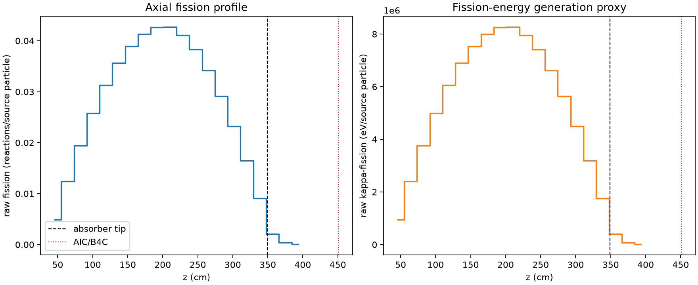
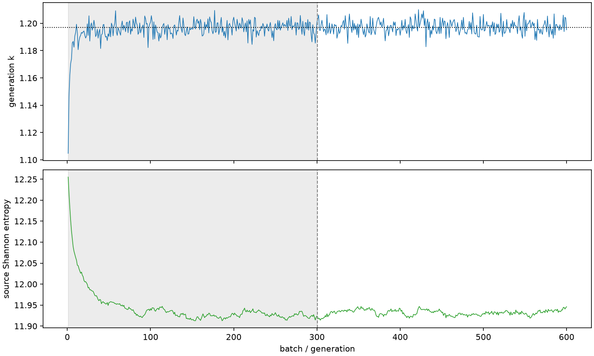

| field | value |
|---|---|
| experiment | V2-STAGE_256_OGRENCI_04-0026 |
| k | 1.1968794624383867 |
| MC standard error | 0.00018034492209815963 |
| seconds | 1054.0001899459967 |
| acceptance | not_assessed |
| convergence | review_required |
Completed is output integrity only; physical and statistical review required. Zero tallies do not prove zero production or zero uncertainty.
| diagnostic | value |
|---|---|
| geometric fuel voxels | 5280 |
| zero fission tally voxels | 0 |
| low signal fuel voxels | 9 |
| low signal fission share | 5.035370778050908e-06 |
| low signal kappa share | 5.03759343424117e-06 |
| important fission share | 0.9500958659368076 |
| previous filter included | 5271 |
| duration estimate s | 1562.5173488400023 |
| actual minus estimate s | -508.51715889400566 |
| fission relative MC error | statistics |
|---|---|
| all_geometric_fuel | {"voxels": 5280, "positive_mean_voxels": 5280, "zero_mean_voxels": 0, "undefined_relative_error_voxels": 0, "median": 0.00944145917683753, "p95": 0.09353656701591748, "maximum": 0.280979512566689} |
| low_signal | {"voxels": 9, "positive_mean_voxels": 9, "zero_mean_voxels": 0, "undefined_relative_error_voxels": 0, "median": 0.2106114184238529, "p95": 0.26472626165895097, "maximum": 0.280979512566689} |
| important_95pct | {"voxels": 3790, "positive_mean_voxels": 3790, "zero_mean_voxels": 0, "undefined_relative_error_voxels": 0, "median": 0.008449303940645858, "p95": 0.012448233232957554, "maximum": 0.015618244992004038} |
| outside_previous_filter | {"voxels": 9, "positive_mean_voxels": 9, "zero_mean_voxels": 0, "undefined_relative_error_voxels": 0, "median": 0.2106114184238529, "p95": 0.26472626165895097, "maximum": 0.280979512566689} |
| kappa_fission relative MC error | statistics |
|---|---|
| all_geometric_fuel | {"voxels": 5280, "positive_mean_voxels": 5280, "zero_mean_voxels": 0, "undefined_relative_error_voxels": 0, "median": 0.009431445762786424, "p95": 0.0934033531305581, "maximum": 0.28035258323976037} |
| low_signal | {"voxels": 9, "positive_mean_voxels": 9, "zero_mean_voxels": 0, "undefined_relative_error_voxels": 0, "median": 0.21039186633094492, "p95": 0.2642093646086832, "maximum": 0.28035258323976037} |
| important_95pct | {"voxels": 3790, "positive_mean_voxels": 3790, "zero_mean_voxels": 0, "undefined_relative_error_voxels": 0, "median": 0.008440280888588843, "p95": 0.012435106584862368, "maximum": 0.01560183812590467} |
| outside_previous_filter | {"voxels": 9, "positive_mean_voxels": 9, "zero_mean_voxels": 0, "undefined_relative_error_voxels": 0, "median": 0.21039186633094492, "p95": 0.2642093646086832, "maximum": 0.28035258323976037} |
| axial bin | fission share | kappa-fission share |
|---|---|---|
| 1 | 0.009996347410258543 | 0.009996776136139763 |
| 2 | 0.025385752925557642 | 0.025385635938224852 |
| 3 | 0.039648005932711006 | 0.03964791349453674 |
| 4 | 0.05270978817895722 | 0.05270965997172221 |
| 5 | 0.06398561626552951 | 0.06398543373705043 |
| 6 | 0.0728577042947982 | 0.07285733494562593 |
| 7 | 0.07965737830546916 | 0.07965716144292893 |
| 8 | 0.0845685120632086 | 0.08456819445580771 |
| 9 | 0.08719040974252042 | 0.08719031356515244 |
| 10 | 0.08729710482484394 | 0.08729667757173475 |
| 11 | 0.08407655957943679 | 0.08407642484606294 |
| 12 | 0.07831879234867657 | 0.07831869912426505 |
| 13 | 0.06982990253489842 | 0.06982998239415385 |
| 14 | 0.059503398601255156 | 0.059503378033256865 |
| 15 | 0.047433706928694794 | 0.04743368034840578 |
| 16 | 0.03366328847966164 | 0.03366309453387607 |
| 17 | 0.01864711447023178 | 0.018647240582985832 |
| 18 | 0.004240114985676893 | 0.004241435038436223 |
| 19 | 0.0008332788902830938 | 0.0008336535914142793 |
| 20 | 0.00015722323733041463 | 0.00015731024821938105 |
Histories include the inactive-to-active transition at batch 300. kappa-fission approximates fission energy production, not total heat deposition.

